|
Vai all'elenco delle parrocchie
1 - Regoli Bernardino - Paroco di questa Parrocchia
1 - Regoli Agostino - fratello ammogliato - Fabbricatore di Nastri, Panni lini, e Lani
2 - Rossetti Giuseppe - Fabbricatore di panni lini, e Merciaro
3 - Catani Niccolò - Lavoratore di Parati sacri
3 - Catani Tommaso - prete
4 - Cappannoli Antonio - Garzone di Sarto
5 - Borrini Orsola - Vedova - Lavorano i Nastri
6 - Favilli Giuseppe - Barbiere
7 - Pollari Francesco - Calzolaro
8 - Montegrossi Niccolò - Lavoratore di Botti
9 - Farnesi Giuseppe - Comandatore della Famiglia del senato
10 - Cerretani Francesco Zaverio - Cherico e Proprietario
11 - Pannellini (Pannilini) Giovanni Battista - Proprietario
11 - Pannellini (Pannilini) MarcAntonio - Potestà di Sovana
12 - Muzzi Francesco - Ministro di Mercanzie di panni, e Seta
12 - Muzzi Antonio - figlio - Prete
13 - Cimballi Angelo - Maestro Barbiere
14 - Nini Francesco - Prete - Proprietario
15 - Mereschini Lavinia - Vedova - Proprietaria
16 - Bartolommi Iacomo - Cerusico, e Lettore in Sapienza
17 - Borgognini Porzia - Vedova - Proprietaria
17 - Lippi Filippo - Prete - Maestro di Casa Borgognini
18 - Becarelli Niccolò - Maestro Doratore, e Tavolaccino dei Conservatori
19 - Tonini Maria Domenica - Vedova - Fila lino
20 - Rossi Providenza - Vedova - Lavora i Rastri, ed è Treccolona
21 - Giuntini Angelo - Maestro Calzolaro
22 - Gagliardi Luigi - Maestro Calzolaro
23 - Michi Domenico - Donzello del Senato, e lavora i corbelli
24 - Tinti Giovanni - Maestro Calzolaro
25 - Borghesi Flaminio - Proprietario
26 - Petrini Francesco - Cuoco
26 - Baldini Pietro - Prete - A locanda
27 - Burani Orsola - Vedova - Lavora i nastri
28 - Ballotta Giuseppe - garzone di Manescalco
29 - Ricci Lucilla - Vedova - Proprietaria
30 - Lalli Giuseppe - Fattore
31 - Masotti Francesco - Prete - Livellario
32 - Mari Bernardino - Giovine di Speziale
33 - Ceccarelli Antonio - Maestro di fornace, e di vasa
34 - Galli Domenico - Prete
34 - Galli Teresa - Vedova - sorella - Tessitora di panno lino
35 - Gori Giuseppe - Maestro Legnajolo
36 - Mostardini Antonio - Cuoco
37 - Boscarini Bernardino - Giovine di Speziale
38 - Franciuoli Teresa - Tesse panni lini
38 - Magri Orsola - Vedova - Cognata - incanna la seta
39 - Rossi Pietro - Proprietario - Cassiere delle Porte della Città
39 - Rossi Ignazio - Prete - Fratello
40 - Pasquini Giuseppe - Proprietario, Computista
41 - Menchini Laura - Vedova -
41 - Galeazzi Andrea - Prete - a Locanda
42 - Gori Livia - Vedova - sarta
43 - Ponti Stefano - Maestro Calzolajo
44 - Rinaldini Giovanni - Ministro di Bottega del ferro
45 - Rocchi Giovandomenico - Prete
46 - Perissi Francesco - Sarto
47 - Rinaldino Antonio - Perrucchiere
48 - Gigli Gaetano - Maestro Sarto
49 - Zocchi Giovanni Battista - Maestro Cappellaro
50 - Pacciani Giovanni
51 - Petrini Domenico - Maestro Fornajo
52 - Faucci Maria Verginia - Vedova - Cuce panni lini, e fà le calze
53 - Guarnieri Maria Domenica - Vedova - fila, va a opera, e accatta
54 - Rossi Margarita - Vedova - fila, ed è Lavandara
55 - Boscarini Sebastiano -Coadiutore nel Magistrato di Biccherna, e Copista
56 - Cecconi Francesco - è servitore
57 - Galassi Sebastiano - Tessitore di panni lani nell'Ospedale
58 - Luci Domenico - Maestro Fornajo
59 - Borghesi Niccolò - Proprietario, e Rettore della Chiesa Metropolitana
60 - Rossi Francesco - Stampatore del Pubblico, Proprietario
60 - Calvisi Domenico - Proprietario
61 - Spinelli Pietro Angelo - Ministro della Stampa Pubblica
62 - Tofani Francesco - Prete
63 - Marchi Francesco - Maestro Barbiere
64 - Bruni Matteo - Maestro Calzolajo
65 - Masetti Innocenzio - Garzone di Calzolajo
66 - Bardini Lorenzo - Servitore
67 - Bandinelli Maddalena - fila il lino, e accatta
68 - Rosani Caterina - Vedova - fila il lino, e accatta
69 - Giannini Giuseppe - Servitore
70 - Franci Sebastiano - accatta
71 - Borgiani Caterina - Vedova - fila lana, lino
72 - Pacini Gasparo - Garzone di Macellaro
73 - Partini Niccola - Vedova - Lavora i nastri
74 - Laini Maria Caterina - Vedova - Lavora i nastri -
75 - Tosi Marco - Garzone di Calzolajo
76 - Benucci Giovanni Battista - Maestro Facchino, e Garzone di Linajolo
77 - Nencini Agostino - Servitore
78 - Farulli Niccolò - Servitore
79 - Lusini Santi - Servitore
80 - Cappelli Bernardino - Ricopre Le sedie con stiancia
81 - Rosadi Giovanni Battista - Lanajolo
82 - Rossetti Rosa - fila lino
83 - Rosi Antonio - Maestro Intagliatore
84 - Chiti Zaccaria - Garzone di Tintore
85 - Pagliazzi Giovanni Battista - fa il Manuale
86 - Roscetti Caterina - Vedova - Lavora i nastri
87 - Donati Niccolò - Servitore
88 - Feliciati Michel Angiolo - Garzone di Sarto
89 - Niccolucci Maria - Vedova - fila lino
90 - ... Alessandra - Vedova - fila lino, e va a opera
91 - Parri Mattio - Maestro Facchino
92 - Fringi Pietro - fa il Manuale, e va opera
93 - Baldi Gaetano - Stallone, e accatta
94 - Bandinelli Francesco - Cherico Proprietario di Terreni, Segretario del Rettore dell'Ospedale
95 - Migliori Domenico - Maestro Oste
96 - Gori Francesco - Maestro Argentiere
97 - Pallini Niccolò - Maestro Quojajo, e conce di quojo Padrone di Botteghe, Calzolarja, lino panno Lino, e lano
98 - Ghirelli Angelo - Maestro Linajolo
99 - Serpi Francesco - Prete
100 - Pacini Onofrio - Donzello del Senato
101 - Diacci Giuseppe - Garzone di Fabbro
102 - Fei Angelo - Garzone di sarto
103 - Adriani Gaetana - Vedova - Lavora i nastri
104 - Pavesi Jacomo - Stagnaro Maestro
105 - Olmi Giovanni - Maestro Speziale
106 - Mattei Anna - Vedova
107 - Bartali Emilia - Vedova - Livellaria, Lavora i nastri
108 - X Lorenzo, Servitore, anzi Lavoratore di terreni de Salvi
109 - Coli Domenico - Computista
110 - Castellucci Bernardino - Proprietario, Cancelliere delle gabelle de Contratti
111 - Giuntino Gio: Pietro - Cameriere nel Collegio Tolomei
112 - Tonni (?) Santi - Garzone di Cappellaro
113 - Gallatti (?) Francesco - Imbiancatore
114 - Pezzuoli Pietro - Lattiere e Garzone di Fornajo
115 - Casini Pelagia
115 - Sanesi Caterina - Cuce e fa calze
116 - Romboli Giuseppe - Tavolaccino, e Maestro Fabbro - Tavolac:o dissi in Biccherna
117 - Manganelli Giovanni - Garzone di Linajolo
118 - Franceschini Caterina - cuce panni lini, da la salda a panni fini
119 - Falusi Antonio - Garzone di Bastiere
120 - Vanninni Giacinto - Proprietario, e Cancelliere del Sale
121 - Petaccioni Antonio - Giovine di Speziale
122 - Magrini Giovanni Battista - Garzone di Sarto, e Servitore
123 - Sorbi Pasquale - Servitore
124 - Marchetti Giovanni - Proprietario
125 - Ancilli Francesco - Garzone di Vasajo
126 - Donati Pietro - Garzone di Cappellajo
127 - Fosi Ansano - Garzone di Fornaro
128 - Pavolini Alcibiade - Garzone di Stracciajolo
129 - Rossi Virginia - Vedova - Tesse panni lini
130 - Marchetti Orazio - Cerusico
131 - Corbini Elisabetta - Vedova - Tesse panni lini
132 - Frosini Giuseppe - Maestro Muratore
133 - Minorzi Giovanna - Vedova - Lavora i nastri
134 - Mori Giovanni - và a opera, e fa il Manuale
135 - Bellacci Lucia - Vedova - Lavora i nastri
136 - Michi Alcibiade Melchiorre - Garzone di Droghiere
137 - Mori Francesca - Vedova - fa le calze
138 - Pecchi Caterina - Vedova - Lavora i nastri
139 - Querci Orsola - Vedova - Lavora i nastri
139 - Cellaj Giovanni - va a opera a Lavorare i terreni
140 - Bernardini Giovanni - va' a opera come sopra
141 - Bonelli Agnesa - Vedova - fila lino
142 - Corzi Lorenzo - raccoglie il concime, e accatta
143 - Marconi Sebastiano - Maestro Linajolo
144 - Savini Felice - Garzone di Pizzicaiolo
145 - Sarinelli Giovanni - Garzone di Fornaciajo
146 - Turini Giuseppe - Cocchiere
147 - Pepi Giuseppe - Prete
148 - Lachi Caterina - Vedova - fila lino
149 - Cinotti Maria - Vedova - fila lino, e va a opera a Lavorare i terreni
150 - Alessandri Tommaso - Maestro Bastiere
151 - Pacciani Ignazio - Garzone di Legnajolo
152 - Morosi Niccola - Vedova - Tesse panni lini
153 - Pacciani Profilia - Vedova - Tesse panni lini
154 - Galli Antonio - Treccolone, e Calzolaro
155 - Martelli Margarita - Vedova - Lavora i nastri
156 - Bartalucci Lorenzo - Garzone di Calzolaro
157 - Vioi Caterina - Vedova - Tesse panni lini
158 - Tinti Marco - Conciatore di Lana
159 - Goretti Pasquale - va a opera a Lavorare i terreni
160 - Casini Massimo - Garzone di Cappellaro
162 - Tinti Elisabetta - Vedova - Lavora i nastri
163 - Sanelli MarcAntonio - va a opera a Lavorare i terreni
164 - Papetti Andrea - Servitore
165 - Rosadi Giovanni - Garzone di Corbellajo
166 - Mariani Iacomo - Maestro Calzolaro
167 - Civai Clemente - Cocchiere
168 - Carapelli Caterina - Vedova - fila, cuce robba lina, e accatta
169 - Lisi Silvestro - Garzone di Linajolo
170 - Cresti Giuseppe - Matarazzaro
171 - Cresti Giovanni - Matarazzaro
172 - Paci Elisabetta - Vedova - accatta
173 - Bracalari Orsola - Vedova - fila, e fa bucate
174 - Tosi Giovanni - Garzone di Legnajolo
175 - Fosi Giovanni Battista - Lavorante alle Saline
176 - Fineschi Alessandro - Maestro Calzolaro
177 - Borghi Angelo - Garzone d'Orefice
178 - Triachi Giuseppe - Garzone di Pizzicajolo
179 - Giorgi Bartolommea - Vedova - fila ed è Lavandara
180 - Chiallini Antonio - Maestro Stagnaro
181 - Brogiotti Damiano - Garzone di Stracciajolo
182 - Giannetti Pietro - Orologiaro
183 - Benvenuti Maria Stella - Maritata - Lavora il terreno, e fila lino
184 - Castellotti Pietro - Tessitore di Seta
185 - Conti Giovanni - Servitore
186 - Calamati Antonio - Proprietario, e Sottocancelliere de Banchetti
187 - Forconi Girolamo - Stracciajolo Maestro
188 - Rigucci Gaetana - Vedova - fila lino
189 - Bagnoli Tommaso - Manuale
190 - Batignani Iacomo - Maestro Legnajolo
191 - Fineschi Francesco - Garzone di Pizzicaiolo, e di Foirnaciaio di Mattoni
192 - Borrani Francesca - Vedova -fila panni lini cuce, e accatta
193 - Cherubini Stefano - Maestro Calzolaro, inabile accatta
194 - Ciantti Orsola - Vedova - Tesse panni lini
195 - Cispanti Francesco - Maestro Calzolaro
196 - Borghi Virginia - Vedova - fa calze, trecciuoli, e cuce panni Llini
197 - Tozzetti Maria - Vedova - fila, accatta
198 - Petrini Ferdinando - Garzone di Sarto
199 - Bonelli Giuseppe - segatore di Legname
200 - Bonelli Luigi - Garzone di Calzolaro
201 - Marini Vincenzo - Maestro Fabbro
202 - Giannetti Antonio - Maestro Panierajo
203 - Guerri Francesco - Merciaro
204 - Baroni Giuseppe Giovan(n)i (?) - Servitore
205 - Palli Giovanni - Prete - Proprietario, e Lettore in Sapienza
206 - Campini Maria Maddalena - Vedova -
207 - Banchi Caterina - Vedova - fila, e accatta
208 - Lusini Orsola, fa i trecciuoli, fila, e accatta
209 - Lippi Maddalena - Vedova - fila e accatta
210 - Rencinini Antonio - Ortolano e Venditore di vino
211 - Poggi Maria - Vedova - fila, va a opera di Lavorare i terreni
212 - Mugnaj Maria Antonia - Vedova - fila lino
213 - Viti Giuseppe - inabile per infermità accatta
214 - Poggi Agostino - Cieco, accatta
215 - Brecchi Domenica - Vedova - fila e accatta
216 - Mucci Giuseppe - Calzolaro
217 - Paradisi Francesco - Materazzaio
218 - Pini Gaetano - Maestro Legnajolo
219 - Nencini Francesco - Calzolaro
220 - Gallori Elena(?) - Vedova
220 - Cinelli Maddalena - Lavora i nastri
221 - Tansini Domenico - Giovine di Mercante di Panni, e Seta
222 - Vieri Antonio - Proprietario, Bilanciere dell'Abbondanza
223 - Vaselli Aurelia - Vedova - Proprietaria
224 - Frosini Giovanna - Vedova - Lavora Scuffie
225 - Fortunj Giuseppe - Cocchiere
226 - Francini Arcangelo - Ortolano
226 - Antichi Lorenzo - figliastro di Arcangelo Francini
227 - Caselli Antonio - Maestro Stracciajolo
228 - Lorenzini Pasquale - Garzone di Librajo
229 - Lanzini Giovanna - Vedova - Tesse panni lini
230 - Bolognini Giovanni Battista - Garzone di Sarto
231 - Giudici Giovanni - Mastro Fornajo
232 - Marzocchi Francesco - va a opera a lavorare i terreni
233 - Bandinelli Margarita - Vedova - accatta
234 - Fondelli Gaetano - Maestro Sarto
235 - Pizzi Rosa - Vedova -Tesse pannni lini
236 - Coradeschi Vincenzo - Maestro Ottonajo
237 - Lucchesi Antonio - Servitore
238 - Falcinelli Teresa - Vedova - lavora al telaro di nastri
239 - Belloni Domenico -Garzome di linajolo
240 - Pellini Gregorio - Garzone di Calzolaro
241 - Ciacci Carlo - Garzone d'Ottonaro
242 - Melani Maria Angela - Vedova - Tesse panni lini
243 - Regoli Caterina - Vedova - Cuce, e fa calze
244 - Perdusselli Placida - incanna seta fila, e cuce panni lini
245 - Burbuj Antonio - Bottajo
246 - Bacchini Gaetano - Garzone di Corbellajo
247 - Pavolini Giulio - Garzone di Tessitore di seta
248 - Porciatti Sebastiano - Maestro Calzajo
249 - Belloni Camillo - Merciaro, e Maestro Panno lino
250 - Gallori Diodato - Cameriere nel Seminario Arcivescovile
251 - Losi Bernardino - lavoratore di funi
252 - Cajani Giovanni Battista - racciontare di scarpe, e accatta
253 - Cavicchioli Pavolo - Garzone di Fabbro
254 - Ghini Giuseppe - Garzone di Linajolo, e lavoratore di Mattoni
255 - Martini Rosa - Vedova - lavora guarnizioni al telaro de nastri
256 - Pacciani Orsola - Vedova - lavora i nastri
257 - Baldi Maria Angela - Vedova - lavorante di terreni, e fila
258 - Bisogni Luigi - accattano
259 - Convento di Vitaeterna - Monache Domenicane
260 - Convento d'Ogni Santi - Monache Benedettine
261 - Congregazione del Refugio
262 - Conservatorio delle Abbandonate
263 - Povere Fanciulle Cognominate Le Sperse - vivono per mezzo di elemosine e di vari lavori donneschi
264 - Poveri Orfani - Impiegati in varie Arti meccaniche
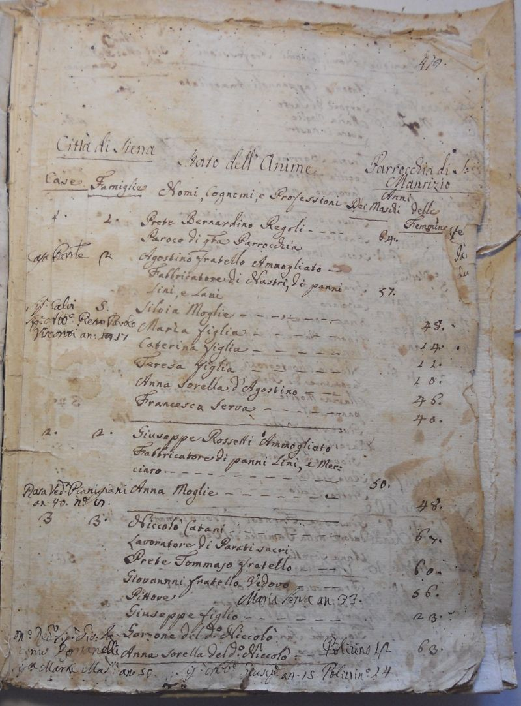


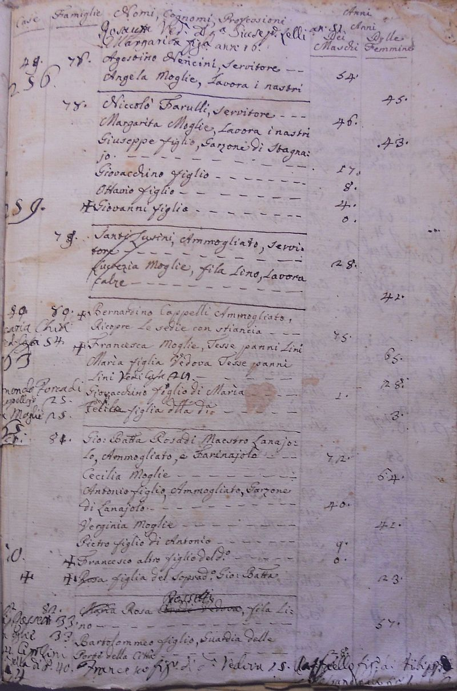

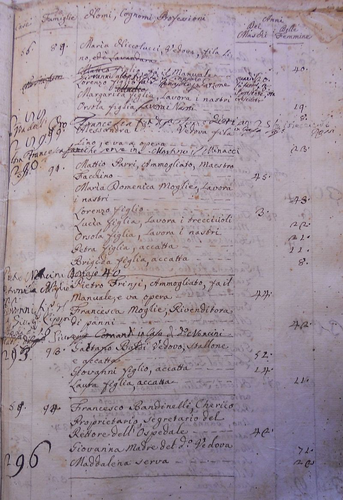
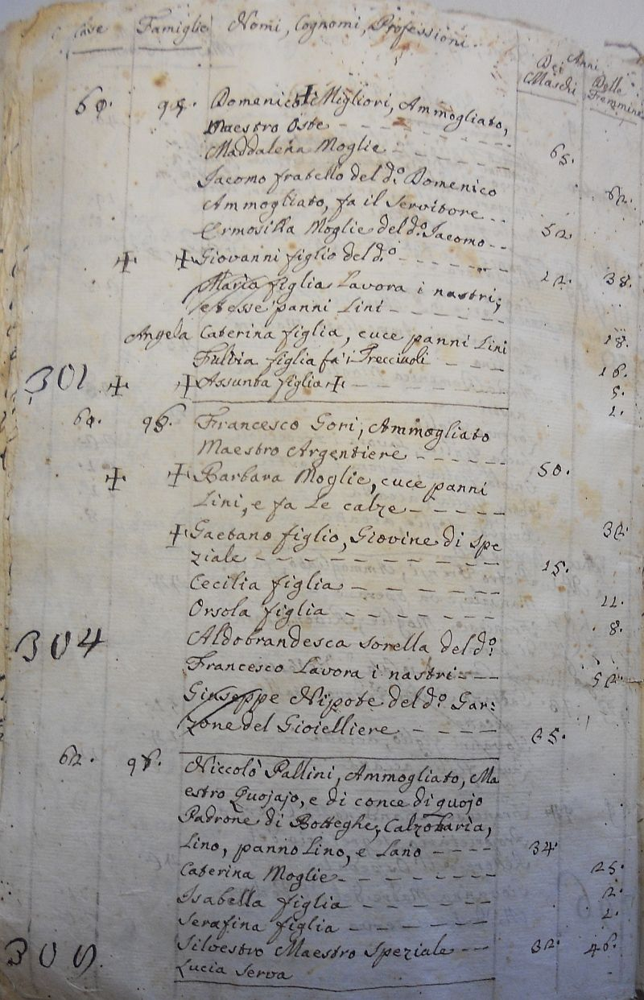

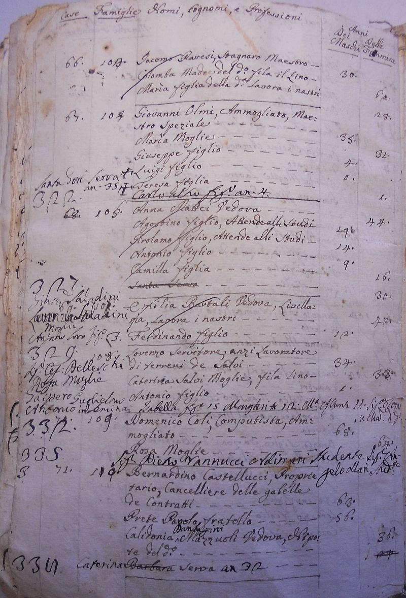
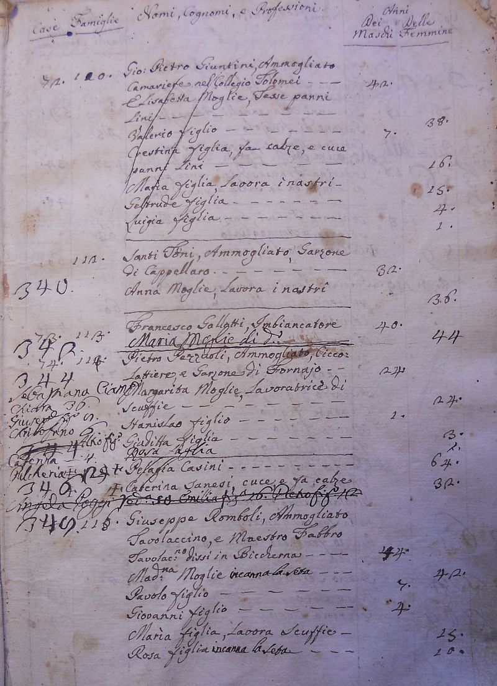
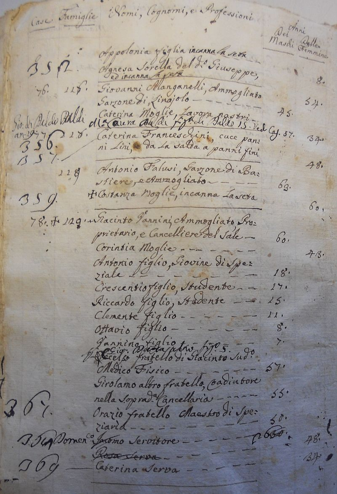


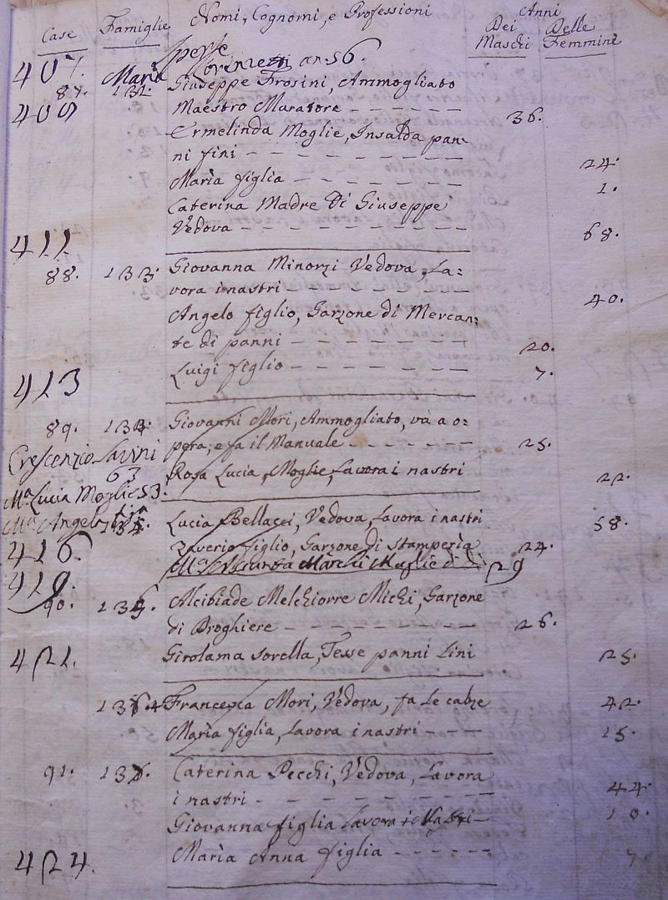

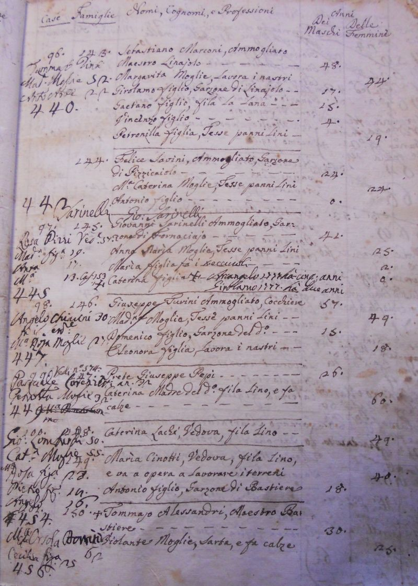

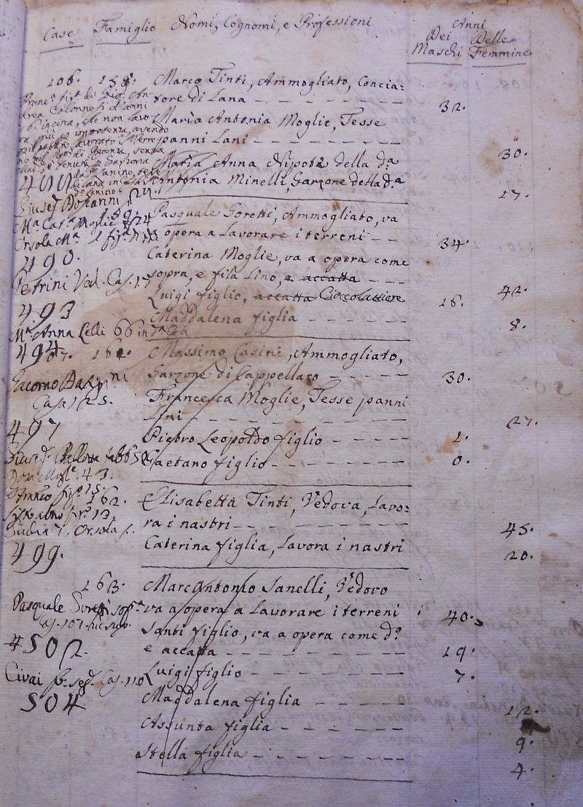


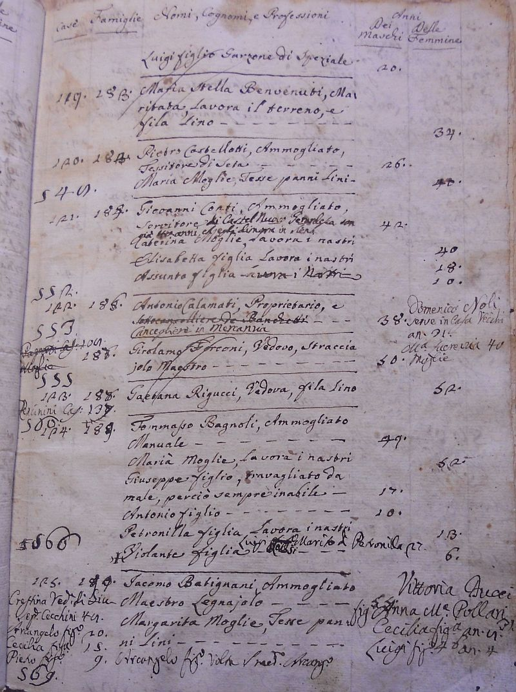


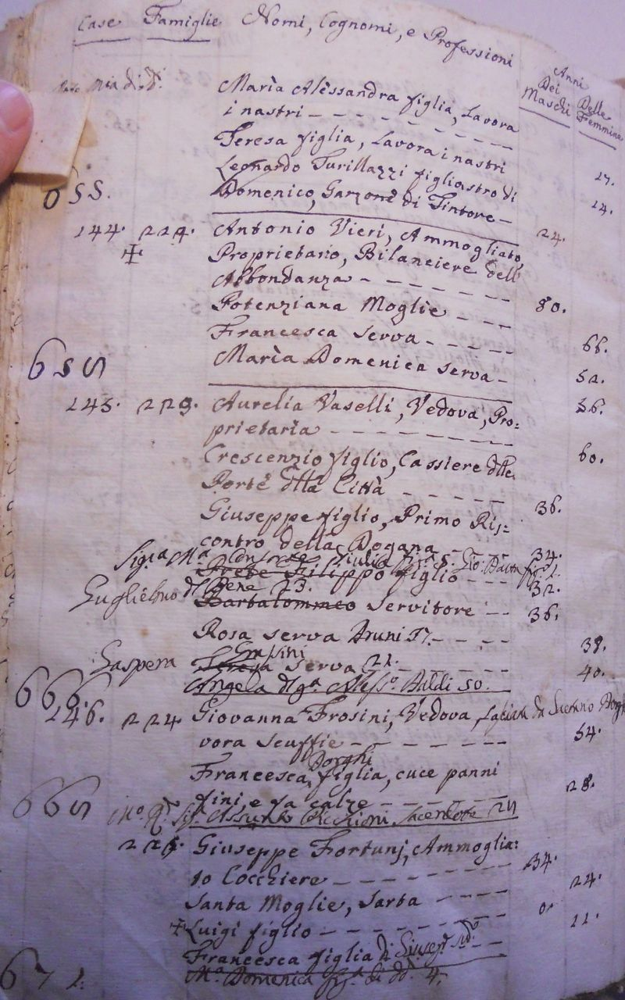


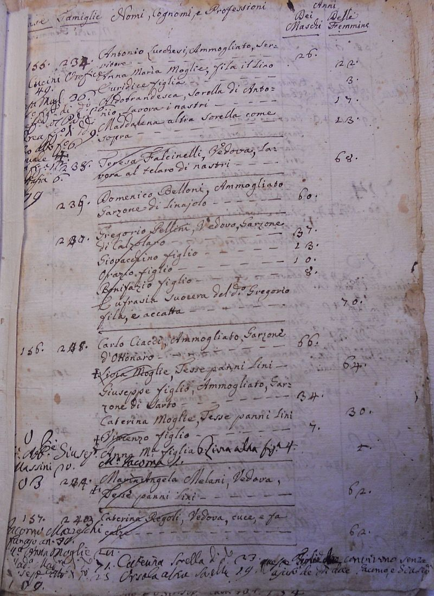


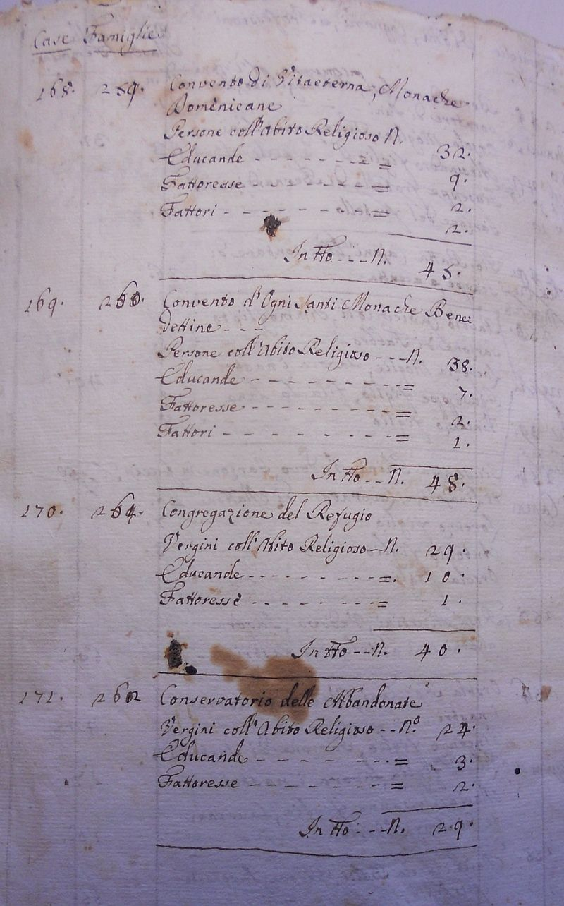
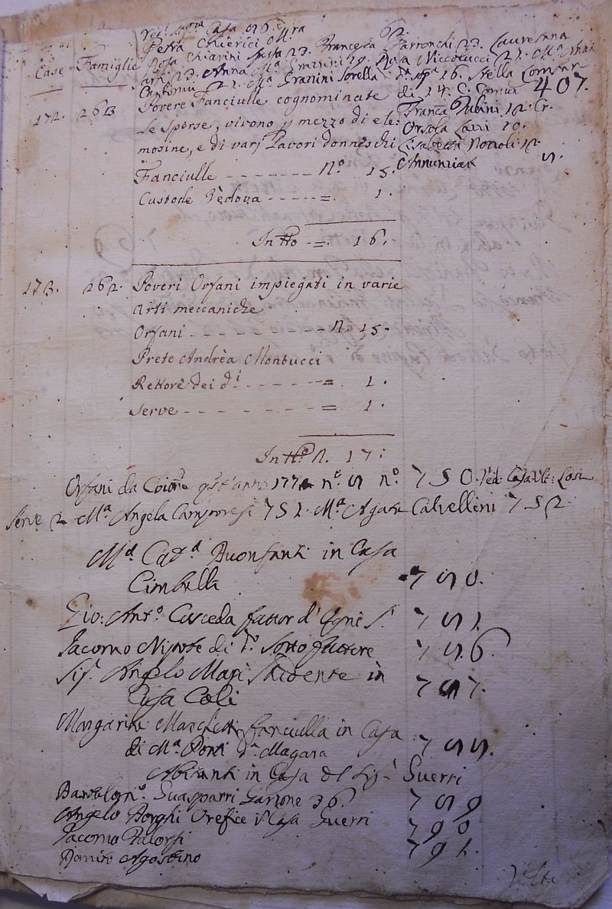
| |